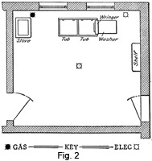
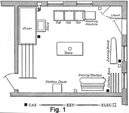
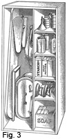

1931 - Laundering and Dry Cleaning
Woman's Institute of Domestic Arts & Sciences,
by Mary Brooks Picken
Room for Laundry Work
5. An ideal arrangement of laundry appliances is possible when there is a laundry room so planned as to meet the need for hot water and easy handling of the work. A good plan is to have such a room adjoining the kitchen; but a basement laundry, which is found in many small houses, is very satisfactory. If there is running water, the same pipes will supply water for the kitchen and laundry, and the same chimney may be used for both rooms.
In a large house where a good-sized room may be had for this purpose and the various labor-saving devices can be purchased, Fig. 1, which shows a complete laundry, may be followed. But in the average home, where less room can be devoted to this purpose and only the washing is done in the laundry, the ironing being done in the kitchen, Fig. 2 provides a suitable arrangement.
6. In many homes, the kitchen must serve the purpose of laundry room also. In such a case, a special built-in closet is a great convenience. If possible, a closet of this type should be large enough to hold a washing machine and portable tubs, if such are used. If, however, the required space is not available, Fig. 3 provides a suggestion for a smaller closet that proves a good substitute.
When the clothes are washed in the kitchen, the sorting and as much of the other handling as possible should be done in another room. It is a wise precaution, too, not to prepare any food in the kitchen until the washing has been finished.